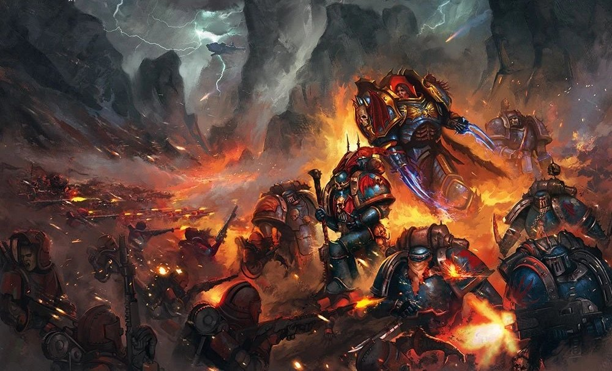

Thramas Crusade
| Thramas Crusade | |
|---|---|
| Part of the Horus Heresy | |
 Night Lords terror troops in the Aegis Sub-sector, from a Dark Angels war record | |
| Date | 007–009.M31 |
| Location | Thramas Sector, Aegis Sub-sector and the Tithe Road, Eastern Fringe |
| Result | Tactical loyalist victory; strategic traitor success. Night Lords fleet broken and Legio Ulricon destroyed, but the Dark Angels kept from Terra |
| Belligerents | |
| Loyalists | Traitors |
| Commanders and leaders | |
| † Killed in action · (WIA) Wounded · (POW) Captured | |
| Units involved | |
| Strength | |
| Casualties and losses | |
| Billions of civilians; the agri-worlds of Aegis burned and the Tithe Road ravaged | |
The Thramas Crusade, also called the Thramas Campaign, was a war fought on the Eastern Fringe between 007 and 009.M31, in the opening years of the Horus Heresy. The Night Lords under their primarch Konrad Curze were sent by the Warmaster Horus to destroy the loyal worlds of the Thramas Sector and seize the forge worlds of Triplex. The Dark Angels under Lion El'Jonson came to stop them. For nearly three years the two Legions fought across the sector in a war of raids, ambushes and void battles.[1][2]
The Dark Angels won the battles. The Night Lords' fleet was broken in a great ambush, their allied Titan Legion destroyed, their First Captain Jago Sevatarion captured, and their primarch twice brought close to death. Yet Horus achieved what he had wanted from the campaign. The Lion and the greater part of the First Legion were held far from Terra, and with the Ruinstorm closing over the east they did not reach the Throneworld until the war was all but over. The Night Lords never again fought as a single Legion.[1][3]
Background
[edit]Horus's dispositions
[edit]Before the Heresy began, Horus used his authority as Warmaster to remove from his path the primarchs he most feared. Sanguinius was sent to the Signus Cluster, Roboute Guilliman to Calth, and the Lion and most of his Legion to campaigns beyond the eastern borders of the Imperium, where news travelled slowly. The Lion accepted the duty without complaint.[1]
After the Drop Site Massacre, Horus gave each of his traitor brothers a task. Konrad Curze, who had come to the council only by hololith, was to take the Night Lords to the Eastern Fringe. With the whole of Legio Ulricon, a traitor Titan Legion, embarked in his fleet, he made for the world of Tsagualsa, a remote planet in the shadow of a great asteroid belt, and made it his base.[1][4]
The Thramas Sector
[edit]The Thramas Sector was the most populous region of the Eastern Fringe, rich in hive worlds that could supply recruits to any Legion that held them. Its neighbour Aegis was the agricultural heart of the region, a sub-sector of agri-worlds. The Tithe Road, a stable Warp route rather than a formal sector, linked Thramas to the distant Nostramo sector. Most important were the forge worlds of Triplex, a system of barren rock whose core held rich minerals and at whose heart lay a Mechanicum fief able to equip whole armies. Horus wanted Triplex for himself, or failing that destroyed. The sector's defence force, the Thramassi Nightwatch, was strong by the standards of the Fringe, and the world of Gulgorahd was ringed with fortifications.[2]
Course of the war
[edit]The Night Lords' advance
[edit]The Night Lords struck first along the Tithe Road and against Heroldar and Thramas. Their war was one of terror. They broadcast the screams of victims over the vox, left the bodies of the dead displayed on city walls, and destroyed population centres so that neighbouring worlds would surrender without a fight. The agri-worlds of Aegis were burned with firestorms and bio-phage weapons, and their plunder fed renegade bands across the region. Many worlds declared for Horus out of fear. Others, believing that surrender to the Night Lords meant death, held out in the hope of relief.[2][4]
Arrival of the Dark Angels
[edit]The Dark Angels reached Thramas with some 70,000 legionaries, a smaller force than the Night Lords, and a larger fleet. The Lion fought as he always had, with long planning and sudden blows. From 007 to 009.M31 the Legions fought across dozens of systems. The Night Lords raided and withdrew, and the Dark Angels pursued, defended the forge worlds of Triplex and laid traps. Both Legions lost heavily, and the civilian dead of the sector ran into billions.[2]

The parley at Tsagualsa
[edit]After two years of war, in 009.M31, Curze sought to turn his brother. He left a deep-void beacon in the path of a Dark Angels outrider, giving the coordinates of a meeting on Tsagualsa. Each primarch came with two companions. The Lion brought Corswain of the Ninth Order and Master Alajos. Curze brought his First Captain, Jago Sevatarion, called Sevatar, and his equerry.[4][5]
The talk began with civility, but Curze mocked the Lion, and the Lion struck him. The meeting became a brawl. Curze gained the upper hand and was strangling his brother when Corswain drove his sword through the Night Haunter's back. Curze fell into a coma. Both Legions sent warriors to recover their primarchs, and both survived.[4][5]
The great ambush
[edit]When the Legions next met in force, it was on the Lion's terms. The Dark Angels ambushed the Night Lords fleet in transit across the Aegis Sub-sector. The carriers of Legio Ulricon were destroyed, spilling their Titans into the void, and the wreckage tore through the Night Lords' formations. Dozens of capital ships were lost, about a quarter of the Night Lords fleet.[2][4]
The boarding of the Invincible Reason
[edit]
In the last stage of the battle, Curze, recovered from his wound, led Sevatar and the Atramentar, the Night Lords' Terminator elite, in a boarding assault on the Lion's flagship, the Invincible Reason. All but about a dozen of the Atramentar were killed. Sevatar and the survivors were captured. The Lion faced Curze once more, and the Night Haunter was again badly wounded, but he escaped into the depths of the ship.[5][4]
Aftermath
[edit]The Night Lords
[edit]The defeat ended the Night Lords as a unified army. Their fleet scattered, their Titans were gone, and their primarch was missing. Some bands later joined the Warmaster's advance on Terra as outriders. Others turned pirate. In the last years of the Heresy the remnants waged a campaign of terror across the Eastern Fringe, before most of them withdrew to the Eye of Terror or the far reaches of the galaxy.[4]
Sevatar remained a prisoner of the Dark Angels for a time. The accounts of his later fate differ between the two Legions' records.[5]
Curze aboard the flagship
[edit]Curze hid aboard the Invincible Reason for months, evading every search. When the Dark Angels fleet followed the light of the Pharos to Macragge, he went with it, and on Macragge he began a campaign of murder against the Imperium Secundus. He was eventually captured by the Lion, in about 011.M31,[a] and later escaped. He returned to Tsagualsa, where he was killed after the Heresy, in about 015.M31,[b] by the Callidus assassin M'Shen.[1][4]
The Dark Angels
[edit]The Lion lost about 10,000 legionaries, and many of his strike forces, sent out to hunt the scattered Night Lords, never returned. The main fleet went on to Macragge, where the Lion became Lord Protector of the Imperium Secundus. The campaign and its aftermath kept the Dark Angels behind the Ruinstorm for years. Imperial historians have argued that the long absence of the Lion also allowed Luther to turn Caliban against him, a betrayal that would shape the Legion and its successors for ten thousand years.[3][1]
Assessment
[edit]Military historians of the Officio Militaris rate the Thramas Crusade as one of the Lion's finest campaigns and one of Horus's most successful. The Lion destroyed a Legion as a fighting force with a smaller army. Horus, who had sought only to hold the Dark Angels far from Terra, achieved that aim at the cost of a Legion he valued little. The campaign is also studied as an early example of terror as a strategy among the Legiones Astartes, and of its limits against an enemy who would not be frightened.[4][2]
Timeline
[edit]| Date | Event |
|---|---|
| 896.M30 | Konrad Curze is found on Nostramo and takes command of the Night Lords. |
| c. 004–005.M31 | Horus sends Lion El'Jonson and most of the Dark Angels beyond the eastern borders.[c] |
| 006.M31 | After the Drop Site Massacre, Horus sends Curze and Legio Ulricon to the Eastern Fringe; Curze makes Tsagualsa his base. |
| 007.M31 | The Night Lords strike along the Tithe Road, at Heroldar and Thramas, and burn the agri-worlds of Aegis. |
| 007.M31 | The Dark Angels reach the Thramas Sector and defend the forge worlds of Triplex. |
| 007–009.M31 | Two years of raids and pursuit across dozens of systems. |
| 009.M31 | The parley at Tsagualsa; Corswain runs Curze through and he falls into a coma. |
| 009.M31 | The great ambush in the Aegis Sub-sector destroys the carriers of Legio Ulricon and a quarter of the Night Lords fleet. |
| 009.M31 | Curze boards the Invincible Reason; Sevatar and the surviving Atramentar are captured. |
| c. 009–010.M31 | The Dark Angels fleet follows the Pharos to Macragge; the Lion becomes Lord Protector of the Imperium Secundus.[d] |
| c. 011.M31 | Curze, who hid aboard the flagship, is captured on Macragge and later escapes.[e] |
| c. 015.M31 | Curze is killed on Tsagualsa by the Callidus assassin M'Shen.[f] |
See also
[edit]Notes
[edit]References
[edit]- ^ a b c d e f Chronicles of the Heresy (sealed). Logos Historica Verita, Terra.
- ^ a b c d e f The War for the Eastern Fringe (c. 015.M31). Logos Historica Verita, Terra.
- ^ a b A Reckoning of the Lord Protector (M32). Archives of the First Legion (restricted).
- ^ a b c d e f g h i Lexicanum Martialis. Officio Militaris.
- ^ a b c d Interrogation of the Prince of Crows (c. 009.M31). Archives of the First Legion (sealed).